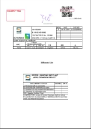
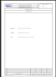
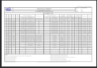

99_PAGE_AM · 99_Page_AM
Mario Rossi
Profile
Preferences
Sign out
Job Document
Isometric Document
Advance Revision Notice
Reference Document
Certificate and Other Document
Dynamic Virtual Binder
Purchase Request
Purchase Order
Bid Document
ASO - Expediting Report
Invoice
Correspondence
Comment
Transmittal · Preparation area
Transmittal · Incoming
Transmittal · Outgoing
Transmittal · Distribution process
PVA
Consolidation
Review
Home
Tasks
PVA
Tasks
Accepted
Reassign
Complete
Case sensitive
Config
rwar-1
rwar-PVA-04-Feb-2021 · Revision 1
Properties
Revisions
Progress
PDF preview
rwar-1
rwar
1
rwar
—
—
Identification
—
Internal Job Document
—
—
Status and ownership
Working
Verified
—
99_PAGE_AM
—
—
—
—
—
—
Not shown in the legacy screens.
Not shown in the legacy screens.
Not shown in the legacy screens.
Not shown in the legacy screens.
Revisions
2
of 3
27%
Fit to page
Select text
Draw
Add shape
Undo
Redo

1

2

3
rwar-PVA-04-Feb-2021
rwar-1
Forward
Backward
Cancel
Complete task